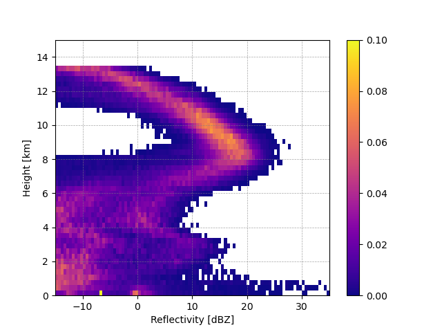
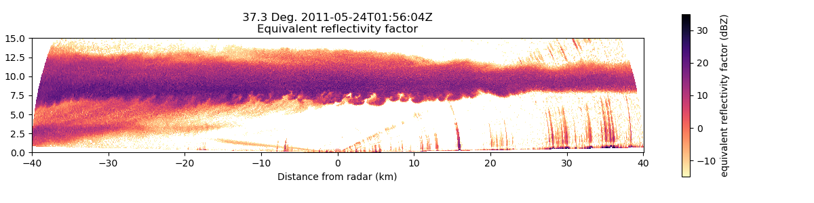
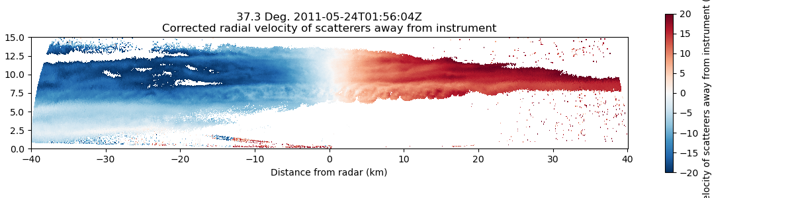
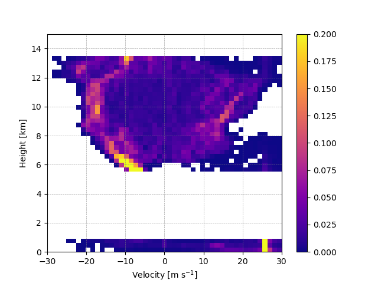

Note
Go to the end to download the full example code.
Creating a CFAD diagram#
This example shows how to create a contoured frequency by altitude (CFAD) diagram
print(__doc__)
# Author: Laura Tomkins (lmtomkin@ncsu.edu)
# License: BSD 3 clause
import matplotlib.pyplot as plt
import numpy as np
from open_radar_data import DATASETS
import pyart
- Description of a CFAD
A contoured frequency by altitude diagram (CFAD) is essentially a 2D histogram used to depict the vertical distribution of a particular variable, such as radar reflectivity. The x-axis represents the frequency of the field and the y-axis represents the frequency of the altitude. A key feature that distinguishes a CFAD from a regular 2D histogram is that it is normalized by altitude and altitudes where there is insufficient data are removed. See Yuter and Houze (1995) for full details of the diagram.
Interpretation In a CFAD diagram, for a given altitude, the normalized frequency values will sum to a value of 1. When interpreting a CFAD diagram, the normalized frequency for a given bin will be the frequency of that value for the associated altitude (i.e. each bin can be interpreted as the fraction of data points at each altitude).
Minimum fraction threshold In a CFAD diagram, altitudes where there is insufficient data are removed. This feature is controlled with the min_frac_thres value. The default value is 0.1, meaning that altitudes where the number of observations is less than one tenth of the maximum number of observations across all altitudes are removed. Increasing the value will act to be more aggressive in removing altitudes and decreasing the value will act to include more data. Setting this value to zero will include all altitudes with data, but use caution when interpreting CFADs with all data available as those altitudes with less data will not be as representative as other altitudes with sufficient data.
Example with RHI First, we will show an example from an RHI scan. We will get the reflectivity data and mask outside -15 and 35 dBZ to remove any noisy data. For the best results, we recommend cleaning up the field as much as possible (i.e. despeckling, filtering, etc.)
# get test data
filename = pyart.testing.get_test_data("sgpxsaprrhicmacI5.c0.20110524.015604_NC4.nc")
radar = pyart.io.read_cfradial(filename)
# compute CFAD
# get reflectivity data and mask extremes
# extract first sweep
radar = radar.extract_sweeps([0])
# get mask array
ref_data = radar.fields["reflectivity_horizontal"]["data"][:]
ref_data_masked = np.ma.masked_outside(ref_data, -15, 35)
field_mask = ref_data_masked.mask
# get CFAD
freq_norm, height_edges, field_edges = pyart.retrieve.create_cfad(
radar,
field_bins=np.linspace(-15, 35, 100),
altitude_bins=np.linspace(0, 15000, 50),
field="reflectivity_horizontal",
field_mask=field_mask,
min_frac_thres=0.1,
)
# plot CFAD
# mask frequency values less than zero
freq_norm_masked = np.ma.masked_less_equal(freq_norm, 0)
# plot CFAD
plt.figure()
ax = plt.axes()
cfad_pm = ax.pcolormesh(
field_edges, height_edges / 1000, freq_norm_masked, cmap="plasma", vmin=0, vmax=0.10
)
plt.colorbar(cfad_pm)
ax.set_xlabel("Reflectivity [dBZ]")
ax.set_ylabel("Height [km]")
ax.grid(ls="--", color="gray", lw=0.5, alpha=0.7)
plt.show()
# plot RHI data
display = pyart.graph.RadarDisplay(radar)
plt.figure(figsize=[12, 3])
ax = plt.axes()
plt.tight_layout()
display.plot(
"reflectivity_horizontal",
0,
vmin=-15,
vmax=35,
mask_outside=True,
cmap="magma_r",
ax=ax,
)
display.set_limits(ylim=[0, 15], ax=ax)
ax.set_aspect("equal")
plt.show()
- 
- 
We can see a general increase in reflectivity values from the echo top to around 8km. The maximum frequency value in each altitude row represents the mode of the reflectivity distribution which we can see also increases from echo top to 8km. Below 8km the distribution of reflectivity values widens, likely associated with some of the noise in the RHI.
# Minimum fraction threshold example
# ----------
# Previously, we used the default `min_frac_thres` of 0.1. Next, we will increase the threshold and set the threshold
# to 0 (not recommended) so show how the CFAD changes.
# Let's see the effect of changing the minimum fraction threshold:
freq_norm2, height_edges, field_edges = pyart.retrieve.create_cfad(
radar,
field_bins=np.linspace(-15, 35, 100),
altitude_bins=np.linspace(0, 15000, 50),
field="reflectivity_horizontal",
field_mask=field_mask,
min_frac_thres=0.2,
)
freq_norm0, height_edges, field_edges = pyart.retrieve.create_cfad(
radar,
field_bins=np.linspace(-15, 35, 100),
altitude_bins=np.linspace(0, 15000, 50),
field="reflectivity_horizontal",
field_mask=field_mask,
min_frac_thres=0,
)
# plot CFAD
# mask zero values
freq_norm2_masked = np.ma.masked_less_equal(freq_norm2, 0)
freq_norm0_masked = np.ma.masked_less_equal(freq_norm0, 0)
# plot
plt.figure(figsize=(12, 3))
ax1 = plt.subplot(1, 3, 3)
cfad_pm = ax1.pcolormesh(
field_edges,
height_edges / 1000,
freq_norm2_masked,
cmap="plasma",
vmin=0,
vmax=0.10,
)
plt.colorbar(cfad_pm, ax=ax1)
ax1.set_xlabel("Reflectivity [dBZ]")
ax1.grid(ls="--", color="gray", lw=0.5, alpha=0.7)
ax1.set_title("min_frac_thres = 0.2")
ax2 = plt.subplot(1, 3, 2)
cfad_pm = ax2.pcolormesh(
field_edges,
height_edges / 1000,
freq_norm_masked,
cmap="plasma",
vmin=0,
vmax=0.10,
)
plt.colorbar(cfad_pm, ax=ax2)
ax2.set_xlabel("Reflectivity [dBZ]")
ax2.grid(ls="--", color="gray", lw=0.5, alpha=0.7)
ax2.set_title("min_frac_thres = 0.1")
ax3 = plt.subplot(1, 3, 1)
cfad_pm = ax3.pcolormesh(
field_edges,
height_edges / 1000,
freq_norm0_masked,
cmap="plasma",
vmin=0,
vmax=0.10,
)
plt.colorbar(cfad_pm, ax=ax3)
ax3.set_xlabel("Reflectivity [dBZ]")
ax3.set_ylabel("Height [km]")
ax3.grid(ls="--", color="gray", lw=0.5, alpha=0.7)
ax3.set_title("min_frac_thres = 0")
plt.show()
Setting the min_frac_thres to 0 (left panel) shows all data, even near the top of the chart (14km) where there is limited echo. Setting the min_frac_thres higher to 0.2 (right panel) removed altitudes between 1 and 5 km where there is less echo than between 6 and 12km where there is a consistent swath of reflectivity throughout the entire cross section.
Velocity example#
Next, we will show a CFAD for the doppler velocity from the above example. First, we have to dealias the velocity.
# create a gatefilter
gatefilter = pyart.filters.GateFilter(radar)
gatefilter.exclude_invalid("reflectivity_horizontal")
gatefilter.exclude_outside("reflectivity_horizontal", -15, 30)
gatefilter.exclude_invalid("mean_doppler_velocity")
# dealias velocity
velocity_dealias = pyart.correct.dealias_region_based(
radar,
gatefilter=gatefilter,
vel_field="mean_doppler_velocity",
nyquist_vel=13,
)
radar.add_field("corrected_velocity", velocity_dealias)
# plot RHI data
display = pyart.graph.RadarDisplay(radar)
plt.figure(figsize=[12, 3])
ax = plt.axes()
plt.tight_layout()
display.plot(
"corrected_velocity",
0,
vmin=-20,
vmax=20,
mask_outside=True,
cmap="RdBu_r",
ax=ax,
)
display.set_limits(ylim=[0, 15], ax=ax)
ax.set_aspect("equal")
plt.show()
freq_norm, height_edges, field_edges = pyart.retrieve.create_cfad(
radar,
field_bins=np.linspace(-30, 30, 50),
altitude_bins=np.linspace(0, 15000, 50),
field="corrected_velocity",
field_mask=field_mask,
min_frac_thres=0.2,
)
# plot CFAD
# mask zero values
freq_norm_masked = np.ma.masked_less_equal(freq_norm, 0)
# plot
plt.figure()
ax = plt.axes()
cfad_pm = ax.pcolormesh(
field_edges,
height_edges / 1000,
freq_norm_masked,
cmap="plasma",
vmin=0,
vmax=0.20,
)
plt.colorbar(cfad_pm)
ax.set_xlabel("Velocity [m s$^{-1}$]")
ax.set_ylabel("Height [km]")
ax.grid(ls="--", color="gray", lw=0.5, alpha=0.7)
plt.show()
- 
- 
The velocity CFAD is very different from the reflectivity CFAD. In most altitudes, there is more of a bimodal pattern associated with the changing sign of the velocity values on either side of the radar. In general, the distribution of velocity values is consistently wide throughout the profile compared to the reflectivity CFAD.
Validation#
Finally, we wanted to compare this function with the original method, so here we reproduce Fig. 2c from Yuter and Houze (1995) to demonstrate that it works the same. Instead of using the pcolormesh function, we are using contour lines.
# get test data
filename = DATASETS.fetch("ddop.910815.213931.cdf")
grid = pyart.io.read_grid(filename)
# make corrections to altitude field
altitude_data = grid.point_z["data"]
grid.point_z["data"] = (altitude_data - 800) / 1000
# get fields to create a mask
field_data = grid.fields["maxdz"]["data"][:]
vvel_data = grid.fields["w_wind"]["data"][:]
vvel_masked = np.ma.masked_invalid(vvel_data)
field_data_masked = np.ma.masked_less_equal(field_data, -15)
field_data_masked = np.ma.masked_where(vvel_masked.mask, field_data_masked)
# define histogram bins
field_bins = np.arange(-20, 65, 5)
altitude_bins = np.arange(-0.2, 18.5, 0.4)
freq_norm, height_edges, field_edges = pyart.retrieve.create_cfad(
grid,
field_bins=field_bins,
altitude_bins=altitude_bins,
field="maxdz",
field_mask=field_data_masked.mask,
min_frac_thres=0.1,
)
# plot CFAD with contour plot
freq_norm_masked = np.ma.masked_less_equal(freq_norm, 0)
h, f = np.meshgrid(height_edges, field_edges)
plt.figure(figsize=(6, 3))
ax = plt.axes()
cont = ax.contour(
f[:-1, :-1] + 2.5,
h[:-1, :-1] + 0.2,
freq_norm.T,
levels=np.arange(0.05, 0.3, 0.05),
colors="black",
)
ax.set_yticks([0, 5, 10, 15])
ax.set_xticks([-10, 0, 10, 20, 30, 40, 50])
ax.set_xlim([-12, 58])
ax.set_ylim([-0.5, 16])
ax.set_ylabel("Height [km]")
ax.set_xlabel("Reflectivity [dBZ]")
ax.axhline(8, ls="--", lw=0.75, color="black")
ax.set_title("Yuter and Houze (1995) Fig. 2c")
plt.show()
# References
# ----------
# Yuter, S. E., and R. A. Houze, 1995: Three-Dimensional Kinematic and Microphysical Evolution of Florida
# Cumulonimbus. Part II: Frequency Distributions of Vertical Velocity, Reflectivity, and Differential Reflectivity.
# Mon. Wea. Rev. 123, 1941-1963. https://doi.org/10.1175/1520-0493(1995)123%3C1941:TDKAME%3E2.0.CO;2
Total running time of the script: (0 minutes 2.340 seconds)